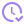
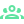
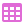

Construyo el front-end de sistemas que se usan todo el díaI build the front-end of systems people use all day
ERP, logística, inventario, personal: las mismas pantallas ocho horas al día, con permisos por rol y reglas de negocio que no pueden romperse entre versiones. Angular con SCSS, Ionic cuando hace falta Android, Material para el sistema de diseño.ERP, logistics, inventory, workforce: the same screens eight hours a day, with role-based permissions and business rules that cannot break between releases. Angular with SCSS, Ionic when Android is needed, Material for the design system.
Además: mentoría del equipo, decisiones de arquitectura, CI y contenedores, y las herramientas de desarrollo que construyo para mi propio trabajo. Lo publicado en GitHub es trabajo independiente.Also: team mentoring, architecture decisions, CI and containers, and the developer tooling I build for my own work. What is published on GitHub is independent work.
Qué desarrollo, y cómo lo entrego.What I develop, and how I ship it.
01 · Aplicaciones de gestión01 · Business applications
ERP, almacén y personal, en AngularERP, warehouse and workforce, in Angular
Desarrollo front-end de aplicaciones operativas: permisos por rol, formularios complejos con validación y listados que siguen siendo rápidos con años de datos. Con SCSS propio y Material para el sistema de diseño.Front-end development of operational applications: role-based permissions, complex forms with validation, and listings that stay fast with years of data. With my own SCSS and Material for the design system.
02 · Móvil, tablet y quiosco02 · Mobile, tablet and kiosk
La misma aplicación en tres formatosThe same application in three shapes
Ionic y Capacitor para llevar la aplicación a Android sin duplicar el código, Quasar para los paneles de gestión, y PWA para lo que tiene que funcionar sin instalación. Incluye terminales de almacén con lector de código de barras.Ionic and Capacitor to take the application to Android without duplicating the code, Quasar for the management panels, and PWA for what has to work without being installed. Includes warehouse handhelds with a barcode reader.
03 · Arquitectura y mentoría03 · Architecture and mentoring
Decidir antes de escribir, y que el equipo pueda seguirDecide before writing, and let the team carry on
Elijo el límite entre el front-end y el servicio, qué se valida en CI con un control automático y qué se documenta como decisión de arquitectura (ADR). Reviso el código del equipo y mentorizo a quien se incorpora.I choose the boundary between the front-end and the service, what gets an automated CI gate and what gets written down as an architecture decision record. I review the team's code and mentor whoever joins.
04 · CI y contenedores04 · CI and containers
El mismo entorno en el portátil y en el runnerThe same environment on the laptop and on the runner
GitLab CI para el producto, GitHub Actions para lo propio. Imágenes de Node/Bun, Angular, Ionic y NestJS con las versiones fijadas, para que el entorno del portátil y el del runner sean el mismo.GitLab CI for the product, GitHub Actions for my own work. Images for Node/Bun, Angular, Ionic and NestJS with pinned versions, so the environment on the laptop and on the runner is the same one.
05 · Herramientas propias05 · Own tooling
Construidas porque me faltabanBuilt because I was missing them
Un servidor MCP con 62 capacidades, un análisis estático de APIs, una biblioteca de serialización, un gestor de secretos y un gestor de claves. Cada uno nació de una necesidad concreta de mi propio trabajo.An MCP server with 62 capabilities, a static analysis engine for APIs, a serialization library, a secret manager and a key manager. Each one started from a concrete need in my own work.
06 · Backend06 · Backend
El servicio detrás de la interfazThe service behind the interface
NestJS y Bun para los servicios, SQLite cuando el dato es local y PostgreSQL cuando no. Lo suficiente para desarrollar y probar la funcionalidad completa sin depender de otro equipo.NestJS and Bun for the services, SQLite when the data is local and PostgreSQL when it is not. Enough to develop and test the full feature without depending on another team.
Trabajo profesionalProfessional work
Lo que he construido para clientes, descrito por su función.What I have built for clients, described by function.
El código de estos sistemas es de la empresa, así que no se publica. Lo que sí puedo mostrar es qué construí y con qué stack.The code behind these systems belongs to the company, so it is not published. What I can show is what I built and with which stack.
LogísticaLogistics
El terminal del operario, en AndroidThe operator's handheld, on Android
Software para los PDAs de almacén: entradas, salidas, inventario, traspasos, reubicación, recepciones y transporte externo. Lo remodelé casi por completo y seguí añadiendo funcionalidad durante años, sobre Angular y Material.Software for the warehouse handhelds: inbound, outbound, inventory, transfers, relocation, reception and outsourced transport. I remodelled it almost entirely and kept adding features for years, on Angular and Material.
OK
OK
REV
OK
El retoThe challenge
Una app usada a jornada completa por operarios, con procesos de inventario y permisos distintos por rol, que había que modernizar sin parar la operación.An app used full-shift by operators, with inventory processes and different permissions per role, that had to be modernised without stopping the operation.
Mi contribuciónMy contribution
Remodelé gran parte del front-end y migré la base a Angular y Material, añadiendo funcionalidad durante años sobre el mismo código.I remodelled most of the front-end and migrated the base to Angular and Material, adding features for years on the same codebase.
AngularTypeScriptCapacitor
QuioscosKiosks
Un motor, siete juegos, tres formatosOne engine, seven games, three shapes
Monorepo Nx con Angular, Capacitor y Phaser: un motor, un catálogo de juegos y un shell que los monta en quiosco, web o móvil. Siete juegos y cinco idiomas. Desarrollé el front-end completo y el servicio que lo acompaña, y parte del diseño visual.An Nx monorepo with Angular, Capacitor and Phaser: an engine, a game catalogue and a shell that mounts them on a kiosk, the web or a phone. Seven games and five languages. I developed the whole front-end and the service behind it, and part of the visual design.
El retoThe challenge
Minijuegos configurables para un cliente concreto, que tienen que funcionar igual en un quiosco táctil, en la web y en el móvil, sin conexión estable.Configurable minigames for a specific client, that must work the same on a touch kiosk, on the web and on a phone, without a stable connection.
Mi contribuciónMy contribution
Desarrollé el sistema entero en solitario: motor, catálogo, shell por formato, base de datos local con SQLite y el servicio NestJS que la alimenta.I developed the whole system alone: engine, catalogue, per-format shell, a local SQLite database and the NestJS service behind it.
AngularNestJSTypeScript

PersonalWorkforce
Web y móvil sobre la misma base de códigoWeb and mobile over one codebase
Monorepo con una aplicación web y otra móvil/tablet que comparten servicios, estilos y recursos. Geolocalización y notificaciones push para registrar la presencia del personal.A monorepo with a web application and a mobile/tablet one sharing services, styles and resources. Geolocation and push notifications to record staff presence.
Ver el casoSee the case
08:57Fichado
El retoThe challenge
Registrar la presencia del personal desde el móvil y gestionarla desde la web, sin mantener dos aplicaciones divergentes.Recording staff presence from the phone and managing it from the web, without maintaining two diverging applications.
Mi contribuciónMy contribution
Diseñé el monorepo: servicios, estilos y recursos compartidos, y una capa por plataforma para lo que de verdad cambia entre web y móvil.I designed the monorepo: shared services, styles and resources, and a per-platform layer for what actually differs between web and mobile.
AngularIonicCapacitor
EntregasDeliveries
La firma del cliente, en el móvilThe customer's signature, on the phone
Aplicación web progresiva en Angular para recoger la firma de recepción de material en la entrega, a pantalla completa en móvil o tablet, seleccionando la tienda y la entrega pendiente.An Angular progressive web app to capture the material receipt signature on delivery, full screen on a phone or tablet, with the store and the pending delivery picked by hand.
Ver el casoSee the case
ENT-2041
El retoThe challenge
Sustituir el albarán en papel por una firma digital válida en el momento de la entrega, desde el móvil del repartidor.Replacing the paper delivery note with a digital signature captured at delivery time, from the courier's phone.
Mi contribuciónMy contribution
Construí la PWA completa: selección de tienda y entrega, canvas de firma a pantalla completa y sincronización con el backend.I built the whole PWA: store and delivery selection, a full-screen signature canvas and sync with the backend.
AngularTypeScript
AlmacénWarehouse
Lo que los operarios ven en las TVsWhat the operators see on the TVs
Las pantallas de Mesa, Ruta y Bultos-Ruta del sistema de gestión, replicadas en las TVs del almacén para que el operario vea el estado sin volver al terminal.The Table, Route and Parcels screens of the management system, replicated on the warehouse TVs so the operator sees the state without going back to the handheld.
Ver el casoSee the case
El retoThe challenge
El operario no puede volver al terminal cada vez que necesita saber el estado de su ruta: tiene que verlo de un vistazo, desde lejos.The operator cannot go back to the handheld every time they need the state of their route: they have to see it at a glance, from a distance.
Mi contribuciónMy contribution
Repliqué las pantallas del sistema de gestión en una app para TVs, con actualización en tiempo real y tipografía pensada para leerse a metros.I replicated the management system's screens in a TV app, with real-time updates and typography meant to be read from metres away.
AngularTypeScript

GestiónManagement
Un panel en Vue y QuasarA panel in Vue and Quasar
Gestión de proyectos y de candidatos con sus formularios, sus filtros y sus informes, y una capa de seguridad con roles y contraseñas.Project and candidate management with its forms, its filters and its reports, and a security layer with roles and passwords.
VueSassTypeScript

ERPERP
La parte visual de un ERP de serviciosThe front-end of a services ERP
Listados, formularios y flujos de trabajo de un ERP de servicios, con su integración en el backend y sus reglas de negocio en la interfaz.Listings, forms and workflows of a services ERP, with its backend integration and its business rules in the interface.
AngularTypeScript
EvidenciaEvidence
La actividad, en cifras.The activity, in numbers.
RepositoriosRepositories
8989
68 públicos y 21 privados68 public and 21 private
Repositorios activosActive repositories
2626
publicados y mantenidos ahorapublished and maintained now
CommitsCommits
22.63822,638
en los repositorios públicos activosacross the active public repositories
Años en GitHubYears on GitHub
55
publicando desde octubre de 2021publishing since October 2021
CapacidadesCapabilities
6262
plugins aislados en DelendAIisolated plugins in DelendAI
Controles de CICI gates
1818
cada uno con su propia comprobacióneach one with its own check
ProyectosProjects
Proyectos independientes, con código abierto.Independent projects, with open code.
Un servidor MCP al que apuntas a un proyecto y le da exactamente las capacidades que ese proyecto necesita: 62 plugins aislados, una CLI, nueve configuraciones predefinidas y un ciclo de propuesta → implementación → revisión → publicación detrás de 18 controles de CI. No sabe nada de tu stack, y se desarrolla con agentes usando el propio servidor.An MCP server you point at a project, and it hands that project exactly the capabilities it needs: 62 isolated plugins, a CLI, nine presets and a proposal → implement → review → release cycle behind 18 CI gates. It knows nothing about your stack, and it is developed by agents using the server it builds.
Detecta el framework leyendo el código, recupera los cuerpos de las peticiones de los esquemas de validación y exporta a Postman, Bruno, Insomnia, HAR, OpenAPI o cURL. Sin levantar el servidor.Detects the framework by reading the code, recovers request bodies from validation schemas, and exports to Postman, Bruno, Insomnia, HAR, OpenAPI or cURL. Without starting the server.
Transformación automática de tipos y adaptadores de validación sobre una base SOLID, con un servidor MCP encima. La suite de tests es más grande que el código fuente, a propósito.Automatic type transformation and validation adapters over a SOLID base, with an MCP server on top. The test suite is larger than the source code, on purpose.
Cifra claves y ficheros de entorno desde la terminal. Publicado en npm y usado para que ninguna credencial real acabe en un repositorio o en una imagen.Encrypts keys and environment files from the terminal. Published on npm and used so that no real credential ends up in a repository or an image.
El currículum como datos validados con Zod, en dos idiomas, con un modo de impresión ajustado al papel real. Publicada en cartagogit.github.io/print-cv.A CV modelled as Zod-validated data, in two languages, with a print mode tuned for real paper. Published at cartagogit.github.io/print-cv.
El sitio que estás leyendo: una página estática generada desde un script, en dos idiomas y con el tema del sistema. El repositorio detrás es una aplicación Angular con render en servidor.The site you are reading: a static page generated from a script, in two languages and following the system theme. The repository behind it is an Angular application with server-side rendering.
Node/Bun, Angular, Ionic, NestJS y Zsh, con las versiones fijadas. El mismo entorno en el portátil y en el runner, para que no haya diferencias entre desarrollo y CI.Node/Bun, Angular, Ionic, NestJS and Zsh, with pinned versions. The same environment on the laptop and on the runner, so development and CI do not drift apart.
Una aplicación de escritorio, Tauri 2 y SQLite, donde las claves de Steam y de otras tiendas no salen del equipo. Sin cuentas, sin nube y sin telemetría.A desktop application, Tauri 2 and SQLite, where Steam keys and keys from other stores never leave the machine. No accounts, no cloud, no telemetry.
Herramientas y contenido para modificar juegos: formatos binarios, localización y automatización de contenido. Proyectos en curso, en evolución constante.Tools and content for modding games: binary formats, localisation and content automation. Work in progress, evolving constantly.
Las tecnologías, agrupadas por uso.The technologies, grouped by use.
La primera capa es la que uso a diario; las demás, según lo que pide cada proyecto.The first layer is what I use daily; the rest, depending on what each project needs.
Front-end — a diarioFront-end — daily
Angular, SCSS, Ionic y el diseñoAngular, SCSS, Ionic and the design
El código abierto y el contexto técnico están en GitHub y LinkedIn. Para contactar, el correo es la vía directa.The open-source work and the technical context are on GitHub and LinkedIn. To get in touch, email is the direct line.